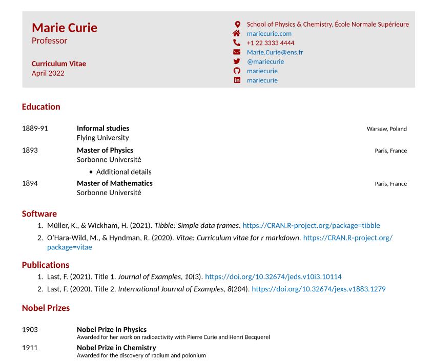
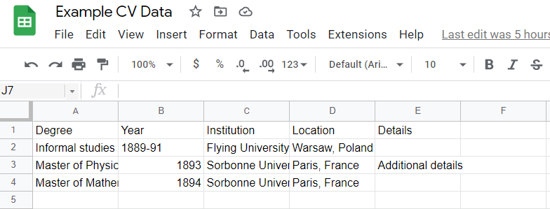
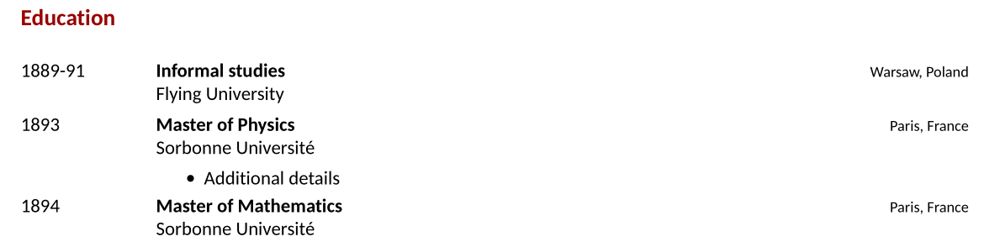
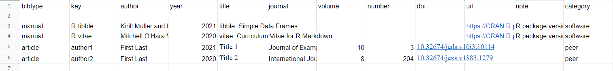
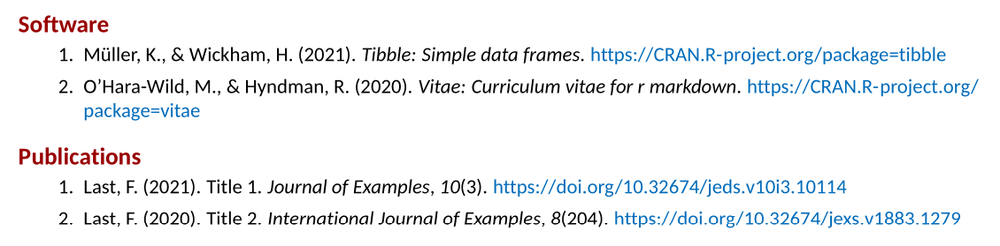
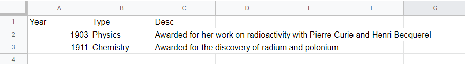
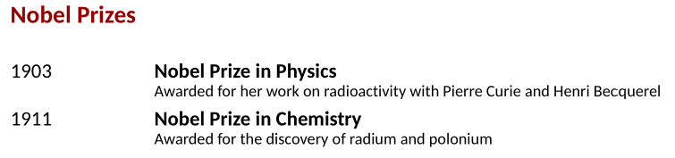

Make an Easy-to-Maintain CV or Resume using R
The vitae package makes it easy to create a reproducible and dare I say quite sexy looking CV or résumé using R Markdown. Essentially, the Vitae package takes in the key CV data - education, work experience, etc. - as data frames and translates this into a pre-templated LaTeX document which then outputs as a PDF.
A very basic example looks like this:

Many of the vitae pre-made examples are based on either creating the data frames in the doc - for example through tibble::tribble - or importing via CSV/Excel. Publications can be read in via Google Scholar or a bibliography file. The idea is to update those files, then open up your .Rmd and hit knit.
All of this can also be accomplished via a single Google Sheet where education, work, conferences, publications, etc. can be easily stored and updated. This is how I maintain my CV - almost effortlessly.
I will walk you through how to build a super simple CV using vitae, tidyverse, and the googlesheets4 package (or, if you’d prefer something simpler, you can also use the gsheet package).
To begin building a CV using vitae, you create a new R Markdown document and select a vitae template in R Studio. This pre-builds an Rmd file that gives examples of including data via hard-coded data frames or .bib files. Instead, we are going to start from scratch and build a CV using the Hyndman template. Once you see my examples below, they can be extended to any other template you wish.
Basic Set-up
Starting with a fresh .Rmd file, you begin with the necessary YAML, which can be changed to suit your needs:
---
name: Marie
surname: Curie
position: "Professor"
address: "School of Physics & Chemistry, École Normale Supérieure"
phone: +1 22 3333 4444
www: mariecurie.com
email: "Marie.Curie@ens.fr"
twitter: mariecurie
github: mariecurie
linkedin: mariecurie
date: "`r format(Sys.time(), '%B %Y')`"
output:
vitae::hyndman
---
Next, we will include the chunk that sets some global R Markdown options and loads our key libraries:
```{r setup, include=FALSE}
knitr::opts_chunk$set(echo = FALSE, warning = FALSE, message = FALSE)
library(vitae)
library(tidyverse)
library(googlesheets4)
```
Google Sheets
Create a new Google Sheet or make a copy of this one, which is used in the examples. You can use any number of worksheets and organize it however you want.
googlesheets4 vs gsheet Packages
In my examples below, I used the googlesheets4 package. This requires some beforehand set-up so to authorize the package to interact with your Google Drive account. You can read more about that package here. If you do not want to mess with authentication, you can use the gsheet package, which will allow you to work with any Google Sheet so long as it is viewable by anyone with the link. Just replace googlesheets4::read_sheet() with gsheet::gsheet2tbl()!
Education
The first worksheet in my Example CV Google Sheet is the education sheet, which is typically the first section of the CV.

We can read it in to R with googlesheets4::read_sheet(). We will then pass it to vitae::detailed_entries() and point that function’s arguments to the proper columns. The what, when, where, with, and why arguments refer to the type of information, which is then used with the vitae templates to create the proper format.
```{r education}
googlesheets4::read_sheet("https://docs.google.com/spreadsheets/d/1YKFymOOFCN6Ywlbkst3sDkrWDcRRgS6iI2djq_D_0-8/edit#gid=0", sheet="Education") %>%
vitae::detailed_entries(what = Degree,
when = Year,
where = Institution,
with = Location,
why = Details)
```
With the Hyndman template, this becomes this:

Publications
There are many ways to include publications in your CV. This can be through a bibliography file that you keep, your Google Scholar profile (with the scholar package), or in the Google Sheet. I prefer to keep everything in a Google Sheet, so for the example CV, I have a worksheet labeled “Publications” that looks like this:

These are common field names for creating a bibliography file. You can read more about Bibtex field names and their requirements here. You can build a bibligraphy of not only journal articles but software, conferences, tech reports, and more. The “category” field on the end is so I can separate my publications into categories. For example, if I want to display my software separate from my peer-reviewed journal articles, I just need to use a filter after reading in my sheet. I then use the RefManageR package to convert the table into a bibliography and write that to a local file. Next, bibliography_entries reads in that local bibliography file and renders the correct formatting. The code looks like this:
# Software
```{r software}
googlesheets4::read_sheet("https://docs.google.com/spreadsheets/d/1YKFymOOFCN6Ywlbkst3sDkrWDcRRgS6iI2djq_D_0-8/edit#gid=0", sheet="Publications") %>%
filter(category == "software") %>%
select(-category) %>%
RefManageR::as.BibEntry() %>%
RefManageR::WriteBib("software.bib", biblatex=T)
vitae::bibliography_entries("software.bib") %>%
arrange(desc(issued))
```
# Publications
```{r peerreviewed}
googlesheets4::read_sheet("https://docs.google.com/spreadsheets/d/1YKFymOOFCN6Ywlbkst3sDkrWDcRRgS6iI2djq_D_0-8/edit#gid=0", sheet="Publications") %>%
filter(category == "peer") %>%
select(-category) %>%
RefManageR::as.BibEntry() %>%
RefManageR::WriteBib("peerreviewed.bib", biblatex=T)
vitae::bibliography_entries("peerreviewed.bib") %>%
arrange(desc(issued))
```
And the result looks like this:

Other Content
Of course, you are not limited to education and publications. You can create any type of data in Google Sheets, read it in, and then include it properly formatted with vitae::detailed_entries, vitae::brief_entries, or vitae::bibliography_entries. Here is one final example using the “Nobel Prizes” sheet.
Data:

Code:
# Nobel Prizes
```{r}
googlesheets4::read_sheet("https://docs.google.com/spreadsheets/d/1YKFymOOFCN6Ywlbkst3sDkrWDcRRgS6iI2djq_D_0-8/edit#gid=0", sheet="Nobel Prizes") %>%
brief_entries(
glue::glue("Nobel Prize in {Type}"),
Year,
Desc
)
```
Result:

You can include any number of sections as needed and organize both the CV-generating .Rmd file and the Google Sheet however you would like. You can also include text and LaTex within the .Rmd to add more content and customization. I highly recommend checking out the examples linked on the vitae Github repo as well as the package vignettes.
Here is the current version of my own CV for an example of what you can do.
Workflow
The process for creating this CV was outlined above. The process for maintaining this CV is quite simple:
- Update the Google Sheet
- Open your .Rmd
- Knit
- Enjoy!
How often and how automated you do this is up to you! I hope that my blog post is useful for giving you the basic tools needed in making a reproducible, easy-to-maintain CV (or résumé - or both!) in R.
Anthony Schmidt
PhD Student / Data Scientist
My research interests include climate change, society, and education. I also have a focus on quantitative methods, including data science education and data visualization.